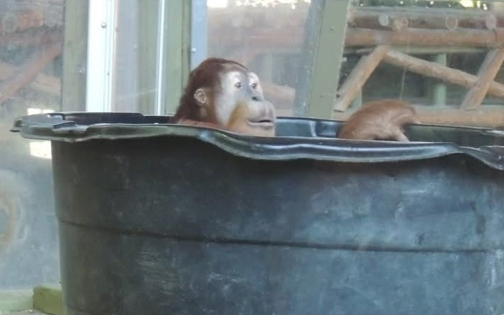
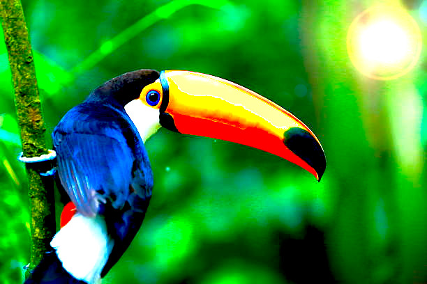

Informed visitors
BehaviourClear information about rules, habitats, and viewing tips encourages visitors to act responsibly, reducing unintentional damage.
The restriction on general vehicular traffic is central to Caracas’s role as a wildlife park. Controlled access helps preserve grasslands, hills, and marshes while still allowing people to experience them.
The Venezuelan government limits vehicles to scheduled guided tours along specified dirt tracks. This policy reduces soil compaction, erosion, noise, and pollution in sensitive habitats.
Beyond trip planning, the site is designed as a learning tool for anyone studying Caracas’s wildlife, flora, or management policies.

Clear information about rules, habitats, and viewing tips encourages visitors to act responsibly, reducing unintentional damage.

The separate pages on wildlife, flora, and access create simple reference points for assignments, presentations, and field reports.

Highlighting government restrictions on traffic shows how policy, science, and visitor management work together to preserve the park.
By presenting Caracas as both a destination and a responsibility, this website encourages every visitor to become a partner in conservation.